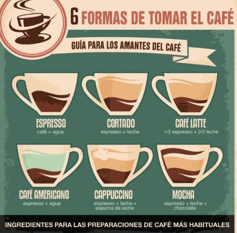

PASO 1 : Elige un buen café de especialidad, en grano, que sea de alta calidad y fresco; cuanto más cercana sea la fecha de tueste mejor. Lo ideal sería no usar un café tostado desde hace más de 3 semanas ya que el café empieza a perder su aroma.
PASO 2: Muele entre 7 y 12 gr de café en un buen molino, un buen café molido para espresso debería tardar en extraerse entre 25-30 segundos. Si se muele demasiado grueso entonces el agua pasará por él demasiado rápido, obteniendo entonces un café de baja extracción con sabor ácido, no dulce, salado y sin retrogusto. Por el contrario si se meule demasiado fino se compactará y el agua casi no puede pasar, dando lugar a un café sobre extraido que es amargo, seco, astringente, vacio. Un buen café espresso, molido correctamente, no debe ser ni ácido ni amargo, debe ser dulce, transparente, limpio, con acidez compleja y con un largo retrogusto. Una vez molido el café, utiliza el tamper para comprimir el café y que quede homogéneo en el cacillo, la presión máxima que debes ejercer es de 196 Newtons.
PASO 3: Con la cafetera precalentada a unos 89-93ºC y siempre utilizando agua purificada. Coloca el café en la portafiltro y si has seguido todos los demás pasos necesitarás entre 5 y 8 segundos para que las primeras gotas renuentes de la crema del café aparezcan con un color avellana y una textura como la miel, y de 25 a 30 segundos para obtener el espreso perfecto. Deberías ver una crema color avellana, llamada crema gruesa o espuma gruesa que aparece en la superficie adornando tu café. Al moverla y cortarla con la cuchara, se cierra de nuevo ella misma.

PASO 1: Toma café en grano o una cápsula de café molido.
PASO 2: Calienta el agua dentro del depósito de agua de la cafetera. En el caso de las cafeteras italianas o monodosis, el agua llega a una temperatura de 90 grados.
PASO 3: Introduce la dosis de café molido o la cápsula y aprieta el botón para preparar el café.
PASO 4: Una vez preparado el café y depositado en el vaso, vierte un chorro de leche para suavizar el sabor.
PASO 5: Acompaña con azúcar, sacarina, leche condensada... si deseas endulzar un poco el sabor del café cortado.

PASO 1: Calenta leche y vertela en una taza grande.
PASO 2: Prepara el café espresso y échalo en la taza.
PASO 3: Vaporiza un poco de leche extra y mete la leche vaporizada.
PASO 4: Echa la cantidad de azúcar a tu gusto.

PASO 1: Extraeremos el espresso perfecto en unos 25 segundos y 30 ml.
PASO 2: Para preparar un buen americano, necesitamos más agua. ...
PASO 3: Servimos por separado, una taza grande de café junto al agua en una tetera.
PASO 4: Vertemos el agua caliente sobre el espresso, y disfrutamos de nuestro americano.

PASO 1: Coloque el mango vacío debajo del dosificador y dé un tiro completo.
PASO 2: Apisonar el café. ...
PASO 3: Limpiar el exceso de café alrededor de la manija.
PASO 4: Prepare el café en una taza de capuchino, es decir, una taza de tamaño mediano. ...
PASO 5: Mientras el café se está destilando en la máquina, puede comenzará la formación de espuma de la leche.
PASO 6: Limpie y purgue el tubo de vapor.
PASO 7: Usando una la espátula para la leche, mantenga la espuma mientras que vierte la cantidad correcta de la leche en la taza, a continuación, con la espátula saque la espuma en la parte superior de la leche para la presentación de la bebida.
PASO 8: Como un toque extra puede espolvorear a la bebida un poco de canela o chocolate en polvo.

PASO 1 : llenar la base con agua fría hasta el nivel de la válvula. Insertar el filtro
PASO 2: llenar completamente el filtro de café molido, pero sin prensar el polvo de café
PASO 3: asegurarse que el filtro y la guarnición de goma estén en su sitio. Enroscar del todo las dos partes de la moka
PASO 4: colocar la moka sobre el fuego. Atención: la llama deberá ser baja
PASO 5: quitar la moka del fuego después de que el café suba y empiece a burbujear. Así se extraerán solo las partes más nobles del café
PASO 6: mezclar el café con una cuchara antes de verterlo en las tazas;
PASO 7: aclarar con agua caliente y dejarla secar del todo antes de enroscarla.